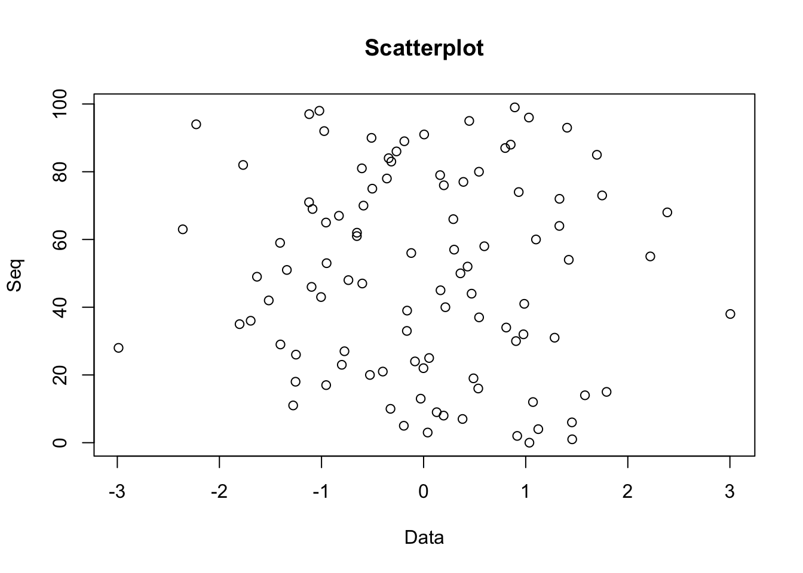

Chapter 3 Data
“In God we trust, all others bring data.”
—W. Edwards Deming
“You can have data without information, but you cannot have information without data.”
—Daniel Keys Moran
3.1 What is data?
At its simplest, data is information. For the purposes of statistical analysis, the majority of data takes the form of numbers that represent things. The number 70 represents my height in inches. It is a data point.
Context is important when it comes to data. If I had given you the number 70 with no other information, it wouldn’t be very useful. It takes on meaning when I tell you what it is meant to represent. Similarly, if I give you the number 22 with no other information, you can’t do much with that. It’s only when I tell you that the number represents my age that it is informative.
Unfortunately, data (for our purposes) doesn’t just materialize out of thin air. We have to collect it. That’s where measurement comes in.
3.2 Types of data and Measurement
Measurement is the process of quantifying something. By measuring my height, I assigned a number to myself that I can then use. I can share it with friends, compare it with others my age, or feel sad that it’s not a little higher. By the same process, I can measure the heights of 20 other people. I would then be collecting data.
Now, measurement is a hot topic. And really, it’s just a theory. There’s no perfect consensus on the proper way to think about measurement. Sorry to introduce some gray area and subjectivity, but that’s where we’re at. Who said things had to be easy? I won’t bore you with the details (there are too many to cover here anyway), but interested readers can read more about it elsewhere2.
Gray area is difficult to live in when it comes to mathematics, so at a point we must be decisive. One of the most widely accepted models of measurement in the field of psychology was published by Stanley Smith Stevens in 1946. Stevens classified measurement as falling into four types: nominal, ordinal, interval, or ratio. Each has specific characteristics and huge implications for how we handle data.
3.2.1 Nominal
Nominal measurements are those that differ qualitatively from one another. They are typically used for identification and little else. There is a lot of freedom given to nominal measurements and consequently difficulty defining them precisely. It is almost easier to speak of what you cannot do with nominal measurements. You cannot order them in a way such that one is greater than another.
Some examples of nominal measurements include: gender, ethnicity, nationality, and favorite flavor of ice-cream.
3.2.2 Ordinal
Ordinal measurements are those that can be ordered (isn’t it nice when names make sense?). In other words, we can rank things measured on an ordinal scale. We are allowed to say that one thing is less than another thing. Beyond that, there’s not much we can do. This measurement tells us nothing about the distance between each measurement, only the order.
Some examples of ordinal measurements include: letter grades, pain rating scales, personality questionaires, and race placement (1st place, 2nd place, etc.).
3.2.3 Interval
Interval measurements are those that contain, you guess it, intervals! These measurements are such that a 1-unit decrease is equal to a 1-unit increase. Whereas ordinal scales told us nothing about the distance between measurements, interval scales finally allow us to do so. An important thing to note about interval measurements is that they do not have a true zero-point. It doesn’t make sense to speak of “zero temperature.”
Some examples of interval measurements include Fahrenheit and hours on a clock.
3.2.4 Ratio
Ratio measurements give us the most information out of the four types. Ratio scales are nearly identical to interval scales. The big difference is that ratio scales actually have a true zero point!
Some examples of ratio measurements include: Kelvin, distance, age, and weight.
3.3 Organizing Data
3.4 Visualizing Data
Numbers aren’t always intuitive way for humans to understand data. It often helps to see the data in the form of a graphic.
Below are some examples of commonly used graphics.

## Loading required package: ggplot2##
## Attaching package: 'plotly'## The following object is masked from 'package:ggplot2':
##
## last_plot## The following object is masked from 'package:stats':
##
## filter## The following object is masked from 'package:graphics':
##
## layout
insert a footnote to direct students↩